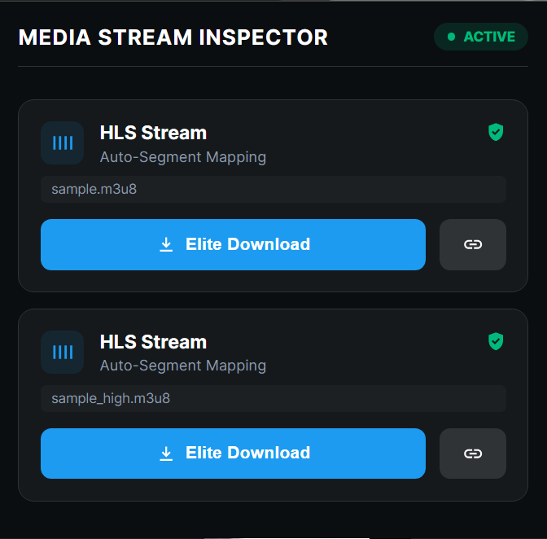

Chrome Extension
Capturing the Unseen Streams
The ultimate professional tool for monitoring and capturing real-time Media Streams on specialized platforms. Optimized for subscription sites, WebRTC, and encrypted HLS.

Engineered for Power Users
🔍
Advanced Detection
Detects HLS (.m3u8), MP4, and WebRTC streams that standard extensions and browsers miss.
🔒
Subscription Support
Optimized for specialized fan platforms and private streaming services using complex delivery.
⚡
Encrypted HLS
Real-time inspection of AES-128 key URLs and initialization segments for professional analysis.
🎮
WebRTC Inspector
Deep dive into peer connection tracks and media flow with live monitoring.